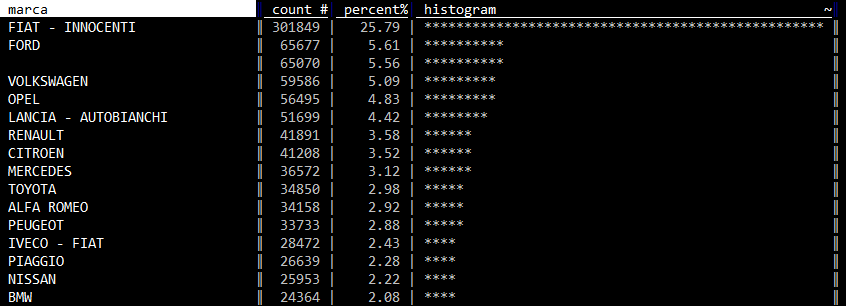
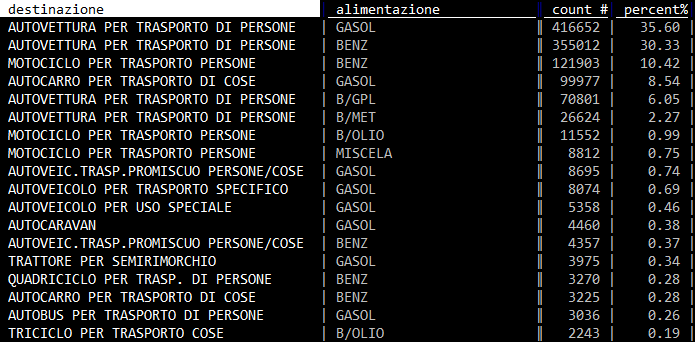

Fogli¶
Introduzione¶
In VisiData ci sono tre tipi di fogli:
- i fogli sorgente, con i dati che si è scelto di aprire con VisiData;
- i fogli derivati, come quelli derivanti da filtraggio o la tabelle con le frequenze (vedi sotto);
- i metafogli, che descrivono e definiscono i dataset caricati (come quello che descrive ad esempio le colonne di una tabella, o il "foglio dei fogli").
Il foglio/tabella correntemente aperto si chiude con q.
Fare JOIN tra tabelle¶
Se ad esempio si volesse calcolare il rapporto tra numero di mezzi e popolazione, sarebbe utile fare un JOIN con una tabella con i dati della popolazione residente.
I dati per provincia sono quelli di sotto e sono stati salvati in un file TSV denominato popolazioneAbruzzo.tsv (fonte ISTAT).
| Provincia | Popolazione |
|---|---|
| L'AQUILA | 300404 |
| TERAMO | 308284 |
| PESCARA | 319388 |
| CHIETI | 387120 |
Si può fare in questo modo:
- si parte da
vd parco_circolante_Abruzzo.csv; - si va sulla colonna
provincia_residenza; - si calcola il foglio delle frequenze pigiando
Shift+fe si ottiene
- si rinomina questo foglio frequenze premendo la barra spaziatrice, scrivendo il comando
rename-sheete dando poiInvio. E poi inserendo il nome nuovo (ad esempiomezziProvincia); - si apre la tabella con i dati sulla popolazione per provincia, pigiando
o, scrivendopopolazioneAbruzzo.tsv(che è il nome del file) e pigiandoInvio(NOTA BENE si può scrivere anche soltantopopoe poi pigiareTABe il nome del file verrà autocompletato). Si otterrà

- si va nella colonna
Provinciae si preme!per impostarla come colonna chiave. Il JOIN in VisiData viene fatto tra colonne chiave; - si apre il "foglio dei fogli" con
Shift+se si visualizzerà qualcosa come;

- si va nella riga che contiene lo sheet
popolazioneAbruzzoe si pigia INVIO; - si va di nuovo nella colonna
Provinciae si preme!per impostarla come colonna chiave; - si apre il "foglio dei fogli" con
Shift+s; - si selezionano con
sle due tabellemezziProvinciaepopolazioneAbruzzo; - si pigia
&che è il comando di JOIN e in basso a sinistra ci viene chiesto quale tipo si vuole applicare (nota bene: con VisiData >2.0 si deve premereCTRL + xe scegliere il tipo diJOIN);

- si scrive
innere si pigiaInvioe si ottiene una tabella che contiene sia il numero di mezzi per provincia, che il numero di abitanti.

Da questa tabella a questo punto, semplificando un po', si potrebbe rapidamente calcolare il numero macchine per persona, in questo modo:
- si va nella colonna
Popolazionee si preme#per impostarla come numero intero; - si pigia
=(per creare una nuova colonna con valori frutto di un'espressione); - si scrive poi nel prompt
count/Popolazione(c'è l'autocompletamento conTABdei nomi delle colonne); - e si ottiene un risultato come quello di sotto.

Concatenare tabelle¶
La concatenazione tra due o più tabelle con la stessa struttura si attiva tramite &. Ad esempio, a partire dai due file inputFileOne.csv e inputFileTwo.csv, presenti qui si procede in questo modo:
- si apre la shell e si va nella cartella che contiene i file da concatenare;
- si scrive
vde si premeInvio; - si seleziona la prima voce
DirSheet for the current directorye si premeinvio; - si selezionano con
si due file; - si preme
g Invioper aprirli entrambi; - si apre il foglio dei fogli con
Shift+s; - si selezionano
inputFileOne.csveinputFileTwo.csvcons; - si preme
&per attivare la concatenazione; - si preme
Ctrl+Xper il menu; - si seleziona
appende poi si premeInvio.
Si avrà a video l'unione dei due file di input (in questo video una replica di quanto descritto, per versioni vd < 2).
Tabelle Pivot¶
Ecco ad esempio come creare quella che da conto del numero di mezzi per marca, suddivisi per provincia:
- si va nella colonna
marcae si imposta come colonna chiave, premendo!; - si va poi nella colonna
provincia_residenzae si pigiaShift+w; - si ottiene la tabella pivot desiderata.

Se invece del conteggio delle occorrenze si volesse (a partire da un altro campo) calcolare un altro dato aggregato - come ad esempio l'età media per marca e provincia - si può procedere in questo modo:
- si va nella colonna
eta_intestatarioe si imposta a numero intero, pigiando su#; - si preme
+, poi in basso a sinistra nel prompt si scriveavge infine si dàInvio; si va di nuovo nella colonnaprovincia_residenzae si pigiaShift+w.
In output, per ogni provincia, si avrà quindi la media desiderata.
Metafogli¶
Foglio di riepilogo globale¶
Per avere una visione a "volo d'uccello" sull'intera tabella esiste il comando Shift+i, che restituisce un riepilogo statistico per tutte le colonne.
Se prima di lanciarlo si definiscono correttamente i campi (ad esempio i numerici, come numerici), verranno eseguiti correttamente anche i calcoli per min, max, median, mean, stdev.

Questa è un'altra feature di grande comodità (presente in molte applicazione e ambienti per analisi dati), che verrà usata molto da chi lavorerà con VisiData.
Foglio dei fogli¶
Il "foglio dei fogli" si apre con Shift + s e fornisce l'elenco (e alcune informazioni correlate) di tutti i fogli aperti. Selezionandone uno e pigiando Invio, quest'ultimo si aprirà.

Per rinominarne uno dal "foglio dei fogli", basta selezionarlo, premere e e inserire il nuovo nome e poi dare Invio. O in alternativa, se si è davanti al foglio che si vuole rinominare, premere la barra spaziatrice, scrivere rename-sheet, digitare il nuovo nome e infine pigiare su Invio.
Fogli derivati¶
Foglio delle frequenze¶
Uno dei modi per avere un riepilogo è usare il foglio delle frequenze. A partire da una colonna (o dalla combinazione di più d'una) è possibile - con Shift+f - aprire un foglio derivato, che contiene dei dati relativi al conteggio per valori distinti di quanto contenuto in quella colonna.
Se per esempio a partire dal Parco Circolante dei veicoli dell'Abruzzo, si volesse avere un'idea sulla distribuzione per "marca", basta navigare in vista tabella sino a quella colonna e poi pigiare Shift+f e avere qualcosa come quella di sotto.

I dati sono ordinati per conteggio ed emerge subito come una famosa marca nazionale da sola faccia ¼ del campione. Così come emerge che c'è un 5% di elementi in cui la marca non è definita e anche questa è un'informazione che ci potrebbe consentire da subito di prendere delle decisioni.
Molto comoda anche la colonna histogram che da visivamente in modo molto diretto un'idea del rapporto tra i numeri descritti in tabella.
È possibile generare un foglio delle frequenze anche basato su più colonne. Per farlo si impostano come colonne chiave (qui come fare) quelle che si vogliono trasformare in "foglio delle frequenze", e poi si pigia g+Shift+f. Qui sotto ad esempio un riepilogo per le coppie univoche di destinazione/alimentazione.
I fogli di frequenza, oltre al conteggio per valori distinti, possono contenere altri calcoli. Gli "aggregatori" possibili sono min, max, avg / mean, median, q3/q4/q5/q10 (terzili/quartili/quintili/decili), sum, distinct, count e keymax.
Ad esempio per ogni provincia si può avere restituito la distribuzione di età per quartile e scoprire che il 50% del campione è compreso nella fascia di età tra i 18 e circa i 55 anni.

Per aggiungere l'aggregatore q4 al foglio delle frequenze, bisogna seguire questi passi:
- navigare sino alla colonna
eta_intestatarioe impostarla a numero intero con#; - premere
+e scrivere (in basso a sinistra)q4(per il calcolo dei quartili, quindi al 25, 50 e 75 percento); - navigare sino alla colonna
provincia_residenzae pigiareShift+f.
Inizierà da subito il calcolo (che non è immediato, sono più di un milione di righe) e alla fine si avrà qualcosa come l'immagine di sopra (non è fico VisiData?).

Salvare un foglio¶
Per salvare un foglio si preme CTRL+s, poi si scrive il nome del file con estensione (nomeEsempio.csv) e infine si pigia Invio.